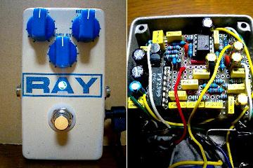
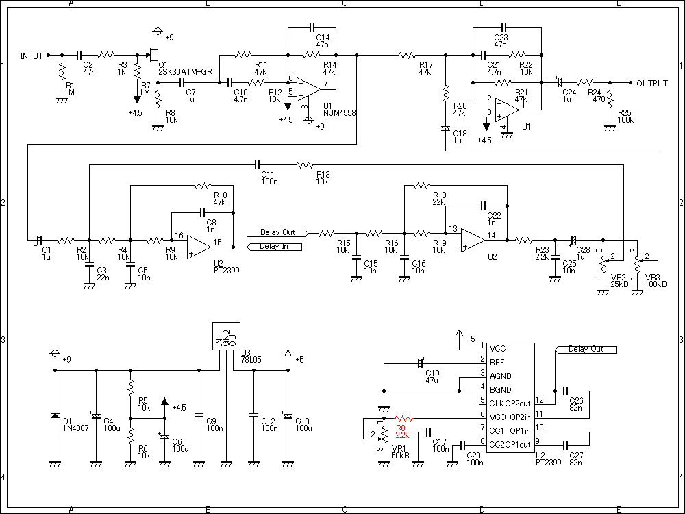
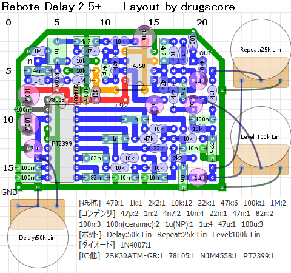
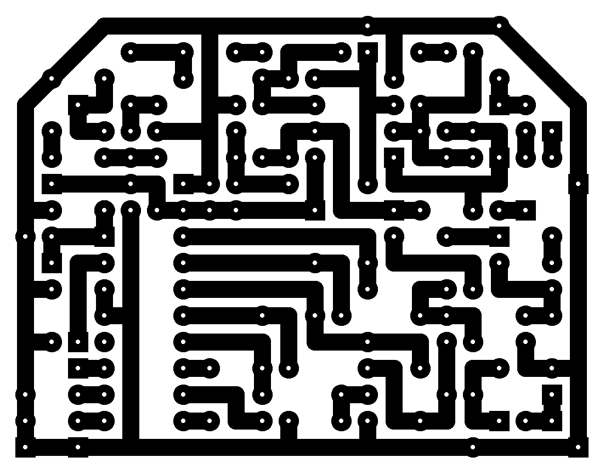

TONEPAD Rebote Delay 2.5改
2009年01月25日 カテゴリー：自作エフェクター（アナログ）

以前作ったRebote Delay 2.5を改造（というか作り直し）してみました。
▽回路図

反転入力なのが気にくわなかったのと、かすかにシャーというホワイトノイズっぽいのが入っていたからです。コーラスによく使われているプリエンファシス・デエンファシスというノイズ対策の回路を使っています。まぁ効果のほどはよくわかりません。
▽レイアウト

▽PCB（横58.4mm縦45.7mm）

ケースを塗り直したんですが、トースターで焼きすぎたみたいでこんがりクリーム色になってしまいました。これはこれでよいのでよしとします。
---以下2021年7月23日追記---
電源投入時にディレイタイムを設定する抵抗値が小さいと動作しなくなるため、回路図のVR1（Delayポット）の部分に2.2kΩの抵抗を追加しました。※レイアウト図には反映されていません。